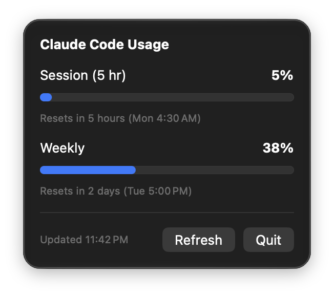

Token Meter
See how much of your Claude Code usage you've used, and when it resets, right from your Mac's menu bar.

What you get
Always visible
Your current 5-hour session percentage sits in the menu bar. No Dock icon, no window.
Session and weekly
Progress bars turn orange above 75% and red above 90%, each with a reset countdown.
Stays fresh
Refreshes every 60 seconds, and matches what Claude Code's /usage shows.
Terminal or Xcode
Reads both the CLI login and Claude in Xcode's login, and uses whichever is still valid.
Install
- Clone the repo and open
Token Meter.xcodeprojin Xcode. - Press Run.
- When macOS asks for Keychain access to Claude Code's credentials, choose Always Allow.
Requires macOS 27, Xcode, and a Claude Code login on this Mac. There's no signed download yet.
Privacy
Your login token is read from the macOS Keychain, sent only to api.anthropic.com, and never written to disk or logged. Token Meter has no analytics and no servers of its own. The source is on GitHub, so you can check.